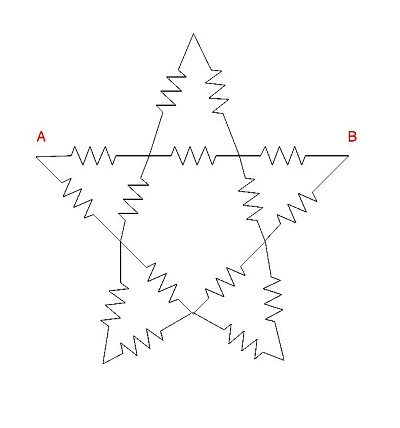
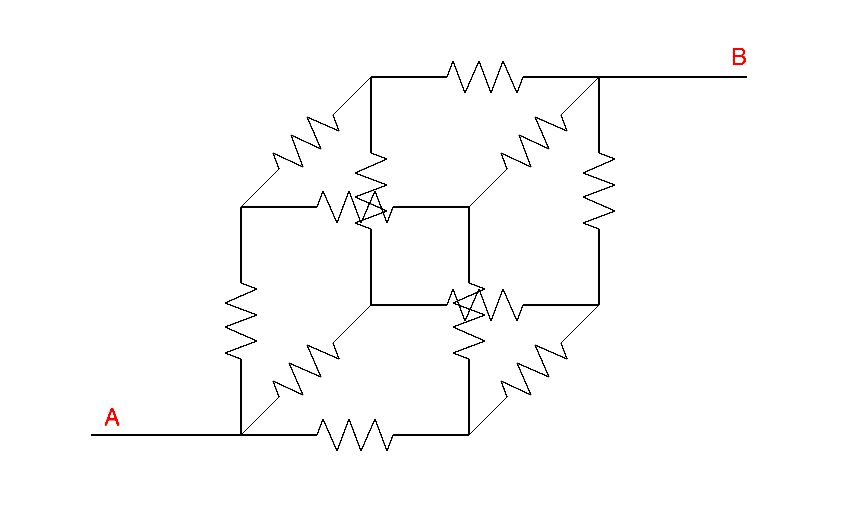
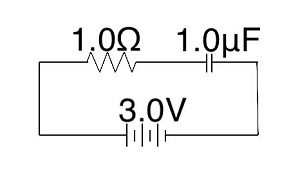
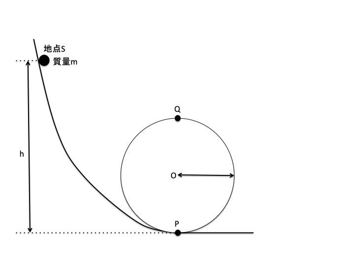
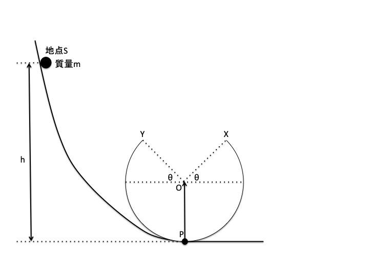

解答用紙付きpdf版はこちら
次の A-B 間の抵抗値を求めよ。ただし、各抵抗の抵抗値は R とする。(20点)
① 
② 
壁面の底面に十分近い部分に小さな排水口がついた、底面の水平が取れた直方体の水槽が ある。 満水の状態から排水口の栓を抜くと空になるまで3時間かかり、 またある蛇口があって、これで栓をした空の水槽に給水すると2時間で満水になる。 このとき、栓を開けたまま蛇口から給水すると何時間で満水になるだろうか。 但し、蛇口の給水速度は不変であるものとし、 また必要ならば水の粘性を無視し、 トリチェリの定理「容器の中の液体が、壁にあけた小さな穴から流出するとき、 液体の粘性を無視すれば、流出速度の大きさは$sqrt(2gh)$ ($g$ は重力加速度、$h$は穴から液面までの高さ)で与えられる」を自明としてよい。 (20点)
以下の問いに答えよ。(20点)  上の回路において、最初コンデンサは充電されていない。 この時、電池を繋いでからコンデンサにかかる電圧が$0.60V$になるまでの時間を求めよ。 答えは有効数字2桁で答えよ。 ただし、$\log 2 = 0.693$, $\log 5 = 1.61$とする。
重力加速度を$g$として、以下の問いに答えよ。(20点)
| [図1] | [図2] |
[図1]のように、半径$r$の円形のレールに、 2本のレールが接続されている。 レールは地点Sから地点Pを通って円形のレールを周回しもう一度地点Pに戻って下の地面に水平なレールにつながっている。 レールに摩擦はないものとする。
① 円形のレールの下端から高さ$h$の地点Sから、質量$m$の 小球を初速度0で滑らせる。点Pでの速さを求めよ。
② 小球が点Qを通過するための$h$の条件を求めよ。
[図2]のように円形のレールの上部を切断した。点Xと点Yの高さは同じである。
③ $h$が十分大きい時、点Xにおける小球の速度$\vec{v}$を求めよ。 ただし、図の上向きをy軸の正方向、右向きをx軸の正方向とする。
④ 点Xでレールを離れた小球が再び点Yでレールに戻るための$h$の条件を求めよ。
以下の問いに答えよ。(20点)
向かい合った平行板電極間に電圧を加えて持続放電をしているとき、主に次の2つの作用により荷電粒子が発生し電流が流れる。
今、距離$d$の平行板電極の間に、ある気体分子が非常に低い圧力で充填されている。 この2極板間にある電圧をかけると、2極板間に放電が生じた。 ここでは、放電中は上記以外の作用は生じないとする。 $\gamma$作用において、陰極に衝突した陽イオンに対し電子が放出される確率が$r$とする時、放電が持続する$r$の条件を求めよ。 ただし、以上の条件下における衝突電離係数 (電子が単位距離進む間に気体分子と衝突する回数)は$a$とする。
問題は以上です。
-COOHの炭素が質量数13である1価のカルボン酸AとアルコールBがある。 Bを硫酸で脱水すると、1種類のアルケンCが生成した。 また、Bを完全に酸化するとケトンDが生成した。 今、AとBを混合し酸を触媒として反応させてできた水に不溶な化合物Eを取り出し、 完全燃焼させて生じた気体を乾燥し、その平均分子量を求めると44.17であった。 この時、A～Eの構造式を描け。ただし、質量数が13の炭素は印をつけて表記すること。
解答は後日Twitterにて発表致します。
もし、解いてみた人がいらっしゃたら、#六甲学院物理部2020模試でツイートしてください。たぶん採点します。